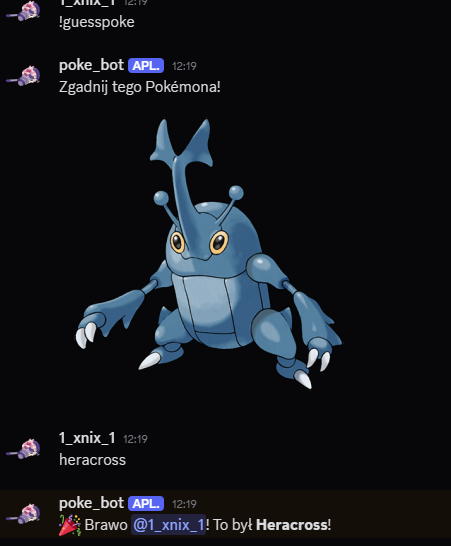

üéÆ Pok√©mon Discord Bot
Witaj! Ten bot to idealny dodatek na Twój serwer Discord, jeśli lubisz Pokémony. Poniżej znajdziesz opis wszystkich dostępnych funkcji i komend.
üìñ Komendy bota:
!rapoke
➝ Losuje Pokémona z losowej generacji, wysyła jego obrazek, opis z Pokédexa i ciekawostkę o generacji
!pokefact [numer]
➝ Wyświetla ciekawostkę o podanej generacji Pokémonów (od 1 do 9).
!guesspoke
➝ Bot wysyła obrazek losowego Pokémona. Użytkownicy mają 30 sekund na odgadnięcie nazwy. Bot gratuluje lub podaje prawidłową odpowiedź.

!help
➝ Wyświetla listę wszystkich komend i ich opis